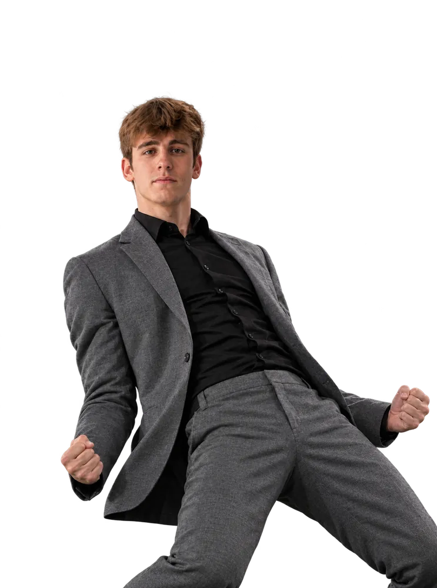
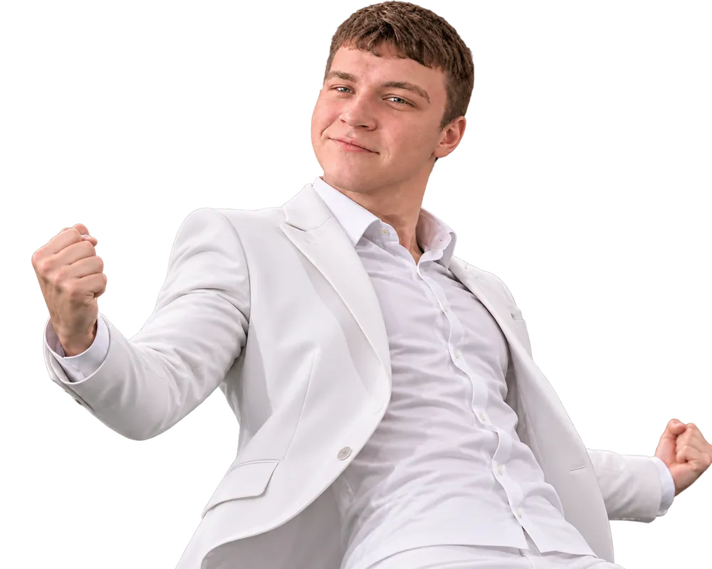
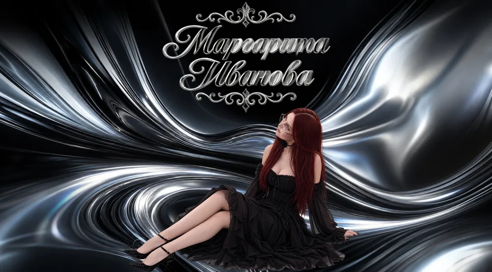
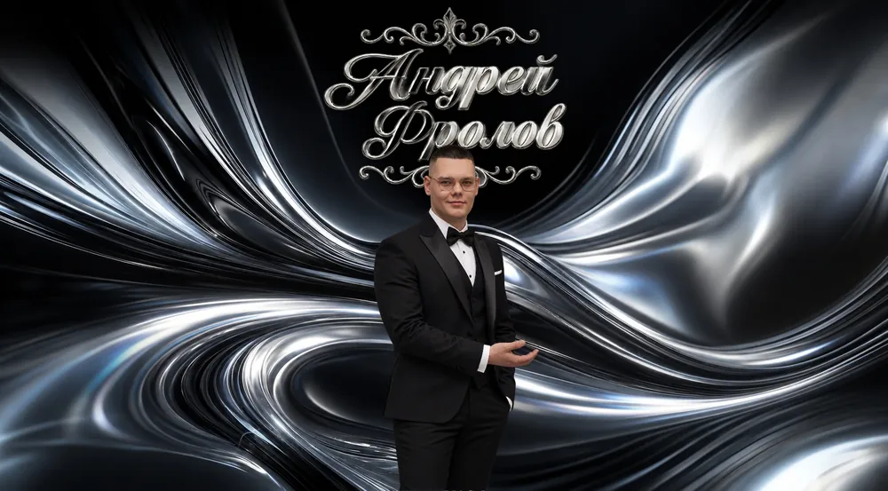
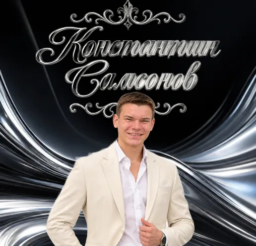
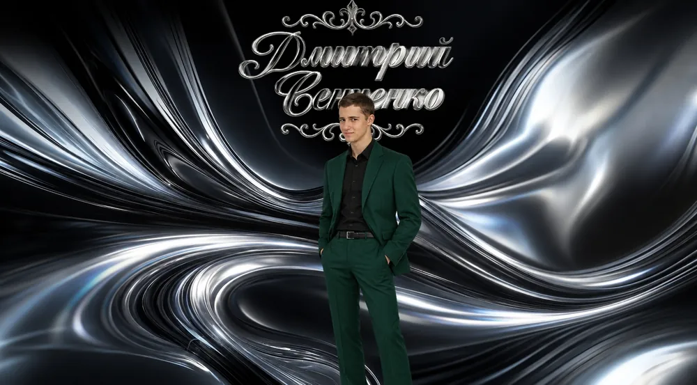
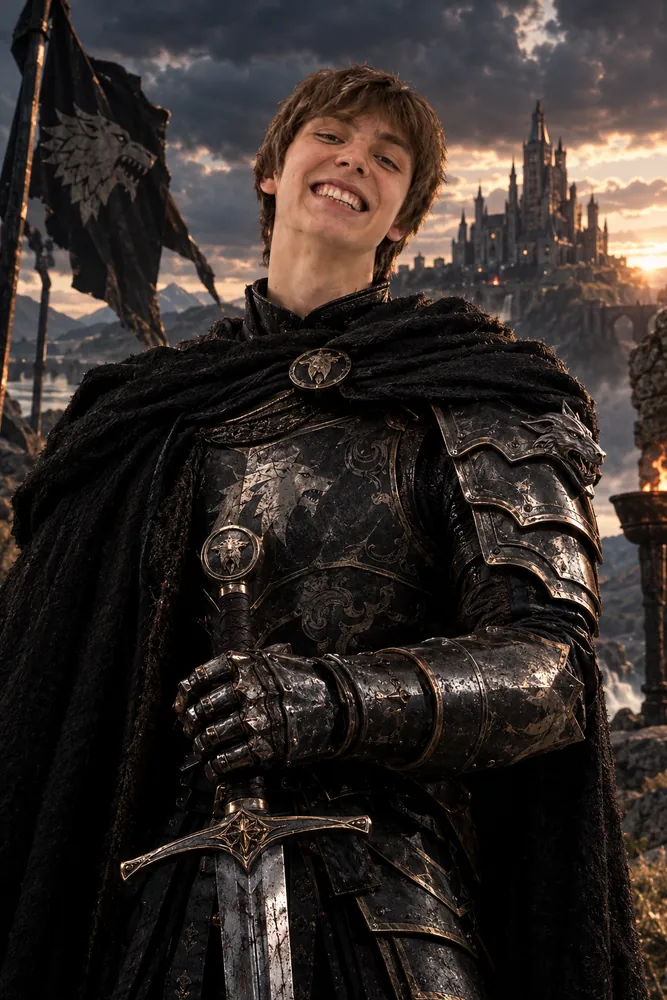
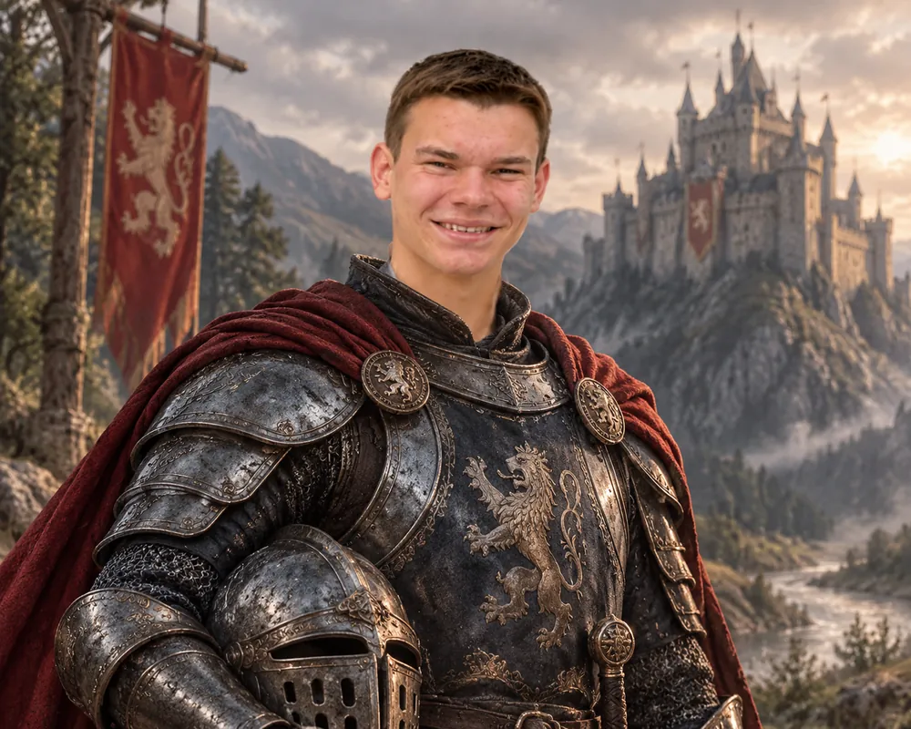
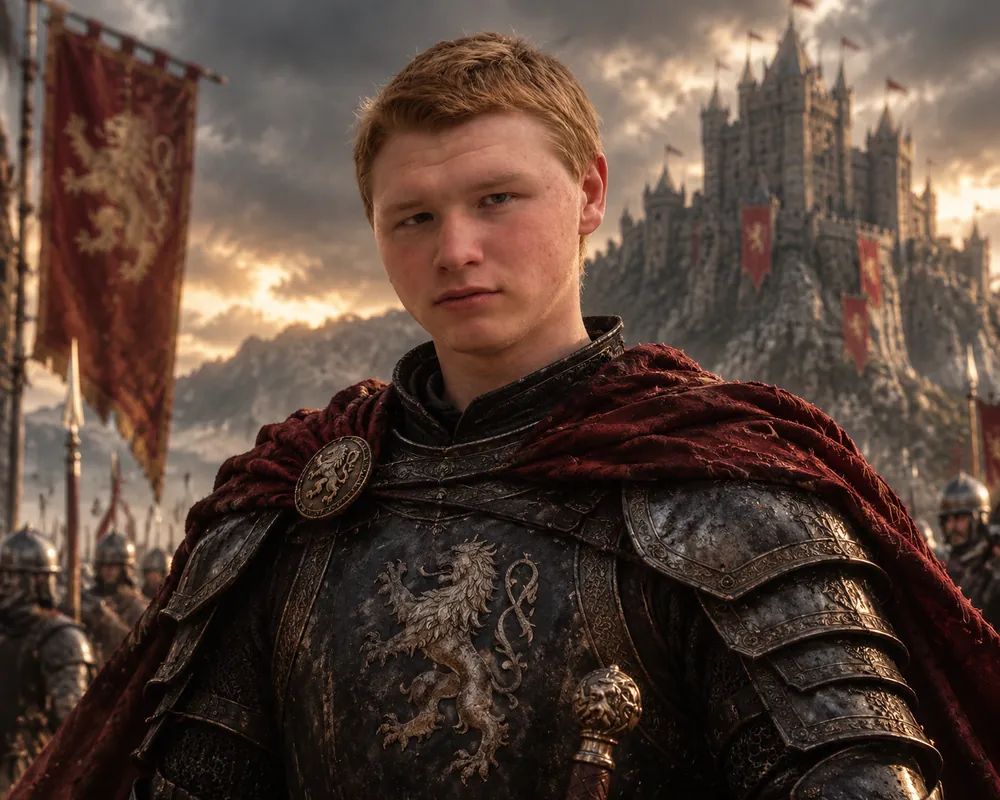

Премия ИС-41Последний танецГолосование открытоMMXXVIIПремия ИС-41Последний танецГолосование открытоMMXXVII
Бюллетень № 0027Выбор сообщества
Голосование открыто
Семь номинаций. В каждой — один твой голос. Решай, кто заберёт свою статуэтку.
Содержание07
01Самый ходящийСтарт
02Главный прогульщик↗
03Флешбэк года↗
04Заводчанин года↗
05Прилежный студент↗
06Машина года↗
07Король группы↗
Голос решает. Один человек — один выбор. Без права на «передумал».
ПРЕМИЯ • 2027
Твой выбор
01/07
Выбери одного номинанта — и перейдём дальше.
Ужас
Самый Ходящий
Алиев Александр
Алиев Александр — человек, ради которого турникет учится открываться заранее. Четыре года он проходил в университет в одно и то же время, и вахтёры сверяли по нему часы.
Пока остальные придумывали, почему сегодня «можно и не идти», Саша уже стоял у двери аудитории. Не потому что волновался, а потому что так заведено: пропуск приложил — день начался.
Его посещаемость никогда не была подвигом. Она была нормой, как закон Ома или чай в буфете. Преподаватели давно перестали отмечать его отдельно: если пара идёт, значит, Алиев где-то в третьем ряду.
Четыре года, восемь семестров и ни одного «забери за меня пропуск». Некоторые просто приходят на пары. Александр — в них живёт.

Галкин Виталий
Галкин Виталий — это тот, кто ходил на пары так, будто подписал с расписанием кровный договор. Четыре года. Почти без пропусков.
Он не устраивал драм, не искал отговорок. Пара — значит пара. Утро, зима, дождь, похмелье после чужого дня рождения — неважно. Виталий вставал, шёл и садился на своё место. Обычно сбоку, поближе к окну, чтобы никто не трогал.
На лекциях он не спал. Нет, серьёзно. Даже когда преподаватель читал монотонно и полгруппы уже витала в облаках, Галкин сидел с открытыми глазами. Иногда записывал. Иногда просто смотрел в одну точку. Но был здесь.
Его почти никогда не спрашивали, почему он пришёл. Спрашивали, почему он *не* пришёл — если такое случалось. А случалось редко. И каждый раз это было событием: «Галкина нет? Он заболел? Что-то серьёзное?»
К четвёртому курсу Виталий стал чем-то вроде мебели. Не в плохом смысле. Надёжной, привычной мебели, без которой аудитория выглядела бы пустой. Приходишь — а он уже там. Уходишь — он ещё дописывает. Стабильность в чистом виде.
Диплом он защитил без пафоса. Просто пришёл, ответил, сел. Как и все четыре года.
Литнарович Кирилл
Кирилл — это человек-стабильность. Пока вокруг кипят страсти, меняются дедлайны, горят проекты и кто-то отчаянно пытается закрыть сессию за три дня, Кирилл просто ходит на пары. Все четыре года он был незыблемым элементом университетской экосистемы. Если в аудитории стоит знакомый силуэт, значит, либо началась пара, либо заканчивается перемена. Он не прогуливал. Точнее, он почти не прогуливал. У него была железная причина отсутствовать: болезнь, форс-мажор или всемирный потоп. Но даже если он болел, он был в чате и спрашивал: «Что задали?» — просто чтобы держать руку на пульсе.
Его утро — это ритуал. Неспешный, но четкий. Кофе, дорога, лекция. Он не бежал сломя голову, потому что не опаздывал. Он не сидел в телефоне на первой паре, потому что слушал. Конспекты Кирилла — это отдельный вид искусства. Они не были красивыми, но там было всё. Он писал как стенографист: быстро, внятно и, главное, по делу.
Одногруппники к третьему курсу смирились: Кирилл — совесть группы. Когда кто-то хотел забить на первую пару, ему говорили: «Ну ты как хочешь, а Кирилл уже в аудитории». Он не читал нотаций, не стыдил. Он просто был там. Его присутствие действовало лучше любого куратора. Глядя на его спокойное лицо, даже самый ленивый студент вздыхал и открывал тетрадь.
За четыре года он стал легендой. Не потому что был гением или душой компании (хотя и тем, и другим отчасти тоже), а потому что выдержал этот марафон. Он прошел через скучные лекции, где преподаватель читал с листа, через семинары, где никто не готов, через утренние пары в минус двадцать и вечерние пары, когда мозг уже кипит.
Когда пришло время получать диплом, кто-то пошутил: «Кирилл, ты можешь не приходить на вручение. Ты и так тут уже четыре года без выходных».
Он улыбнулся. Он пришел. Конечно, пришел. Это же Кирилл.
Голиков Матвей
Голиков Матвей ездит на пары как по расписанию метро: без суеты, по маршруту, с точностью до минуты. Восемь семестров — восемь станций, и ни одной он не проехал мимо.
Пробки, дождь, принципиально плохой день — Матвей садится и едет. Опоздания бывают у остальных; у него бывают «задержки на линии», и то редко.
Он знает, где в аудитории лучше розетка, какая лекция заканчивается раньше и в какой день в буфете вкусные пирожки. Всё это не от лени, а от внимательного отношения к маршруту.
Конечная станция — диплом. Матвей едет к ней с тем же спокойным лицом, с каким пришёл на первую пару. Двери закрываются. Следующая — выпуск.
Куликов Виталий
Куликов Виталий — человек, у которого будильник боится не прозвенеть. Он просыпается ещё до звонка, потому что знает: первая пара не ждёт.
Четыре года одного и того же утра: умылся, собрался, вышел. Без драм, без «ещё пять минут» и без вечного «я уже подъезжаю», когда на самом деле только встал. Если Виталий сказал «буду к началу», он будет за минуту до.
Преподаватели замечали: стоит Куликову появиться в дверях — на часах 8:29. Группа проверяла: сверяла часы по нему и, удивительно, они сходились.
Некоторые считают время. Виталий им управляет — ровно до звонка.

Берсенев Илья
Берсенев Илья — главный печатный довод в споре «а ходит ли он на пары». Достаточно открыть зачётку: отметок там столько, что штамп давно стал частью его личного стиля.
Он не из тех, кто показывается раз в семестр для галочки. Илья приходит регулярно и без объявлений — как налоги и дедлайны. Стабильно, тихо, с тетрадью под мышкой.
В деканате его знают в лицо и без фамилии: «вон тот, у которого всё в порядке». Это высшая степень доверия, на которую способна кафедра.
Четыре года — это не про героизм. Это про то, как восемь раз подряд получить подпись и ни разу не потерять зачётку.
Больница
Главный прогульщик
Полякова Екатерина
Четыре года упорного труда — и вот результат: доведенный до автоматизма навык отсутствовать. Награждается за оптимизацию учебного процесса и личный рекорд «Я не приду, но вы держитесь».

Иванова Маргарита
За выдающиеся способности к самоорганизации вне учебного процесса и умение находить вдохновение там, где нет пар. Рита мастерски доказала: главное — не количество посещённых занятий, а уверенность в том, что ты всё успеешь. Её философия проста и гениальна: «Если меня нет на паре — значит, я занята чем-то важным. Или просто сплю». Награждается за стабильность, харизму и умение появляться именно тогда, когда это действительно нужно.

Фролов Андрей
Фролов Андрей знает расписание лучше деканата — и ровно поэтому умеет его обходить. Он помнит, в какой аудитории скрипит дверь, на каком этаже дежурит вахтёр и сколько секунд преподаватель смотрит на доску, прежде чем обернуться.
Побег с пары для него не импровизация, а операция. Тихо встал, тихо вышел, тихо оказался уже где-то совсем в другом месте. Приходится признать: талант.
Одногруппники до сих пор спорят: он действительно был на паре или это просто его куртка висела на стуле? Версия с курткой набирает голоса.
Награда за стелс, терпение и умение исчезать, пока все смотрят на доску.

Самсонов Константин
Самсонов Константин не прогуливает — он «выезжает по делам». Дела обычно связаны с четырьмя колёсами, одним гаражом и обещанием вернуться «минут через двадцать». Через двадцать минут пара заканчивается.
Он внятно объяснит, почему ВАЗ-2112 важнее лекции по теории вероятностей: у машины шансы завестись с первого раза пятьдесят на пятьдесят, а лекция будет и завтра.
В группе знают закон: если в чате написано «я уже еду», Костя в этот момент выкручивает какую-то гайку. Зато если приходит, то пахнет бензином и счастьем.
Награда за преданность делу, не имеющему отношения к паре.
Караев Эльчин
Караев Эльчин — легенда с двумя сезонами: «Присутствие» и «Отсутствие». Первые два курса он ходил так, что календарь можно было сверять по нему. А потом наступил третий — и Эльчин растворился.
Никаких громких заявлений и прощаний. Просто в один день место у стены оказалось пустым, и оно оставалось пустым весь год. Преподаватели вздыхали, группа привыкала, а в списках он числился строго исправно.
Но на четвёртом курсе он вернулся — как сериал, который все давно считали закрытым. Сел на то же место и сделал вид, что никуда не уходил.
Награда за самый эффектный уход и самое неожиданное возвращение.

Сенченко Дмитрий
Сенченко Дмитрий никогда не опаздывает — он просто едет не туда. Его Granta знает дорогу к автомойке, заправке, шиномонтажу и ещё одному месту, о котором все молчат. Только к нужной аудитории она почему-то ехать не хочет.
Дима занят всегда. Если не едет — значит, паркуется. Если не паркуется — значит, ищет, где припарковаться. А если ничем не занят, то, скорее всего, уже уехал.
Его можно было ждать, как автобус в дождь: все смотрят на дорогу, а он где-то в соседнем районе делает полезное дело.
Награда за скорость, манёвренность и умение объехать любую аудиторию по кругу.
Кирилл Литнарович — человек, который два года подряд был «тоскиком года», в 2025-м стал ещё и «воздуханом» и «каналом года», Четыре титула за два года — и всё равно в этом зале он такой же рыцарь, как все остальные. Корону не наследуют и не выслуживают: её отдаёт группа.
Победитель в номинациях "Оператор года" 2025; "Канал года" 2025

Лукин Александр
Александр Лукин.** В 2025-м он стал «Оператором года» и «Каналом года» одновременно. Не потому что громко заявлял о себе, а потому что молча делал то, что другие только обещают. Он ловил кадры, которые остаются в памяти, строил канал, в который хочется возвращаться, и делал это с такой точностью и вкусом, что спорить о главной номинации уже просто бессмысленно. Настоящий победитель — это не тот, кто собирает лайки, а тот, кто создаёт картинку и пространство, без которых всё остальное теряет смысл. Александр Лукин уже доказал: оператор может быть художником, а канал — целым миром. Он не претендует на победу. Он её уже забрал. **Лукин. Победитель. По праву.
Полякова Екатерина
Скоро

Самсонов Константин
Скоро
Сенченко Дмитрий
Скоро
Победитель в номинации "Мем года" 2024, 2025

Сериков Александр
Александр Сериков. Два года подряд — «Мем года». 2024-й. 2025-й. Без перерыва. Без конкуренции. Он не просто делал мемы. Он создавал язык, на котором разговаривал весь чат. Пока другие пытались быть смешными, Сериков делал так, что смеялись все — и потом ещё долго цитировали. Именно поэтому сейчас, когда речь идёт о главной номинации — «Победитель», — выбирать уже не из кого. Потому что настоящий победитель — это не тот, кто один раз попал в точку. Это тот, кто два года подряд диктовал правила игры. Тот, кто превращал обычный момент в легенду. Тот, чьи мемы жили дольше любого хайпа. Александр Сериков уже доказал: мем может быть сильнее любого заявления, а юмор — настоящим оружием. Он не просит победу. Он её уже забрал. Просто все ещё смеются над его мемами и забывают, кто на самом деле главный. Сериков. Победитель. По праву.